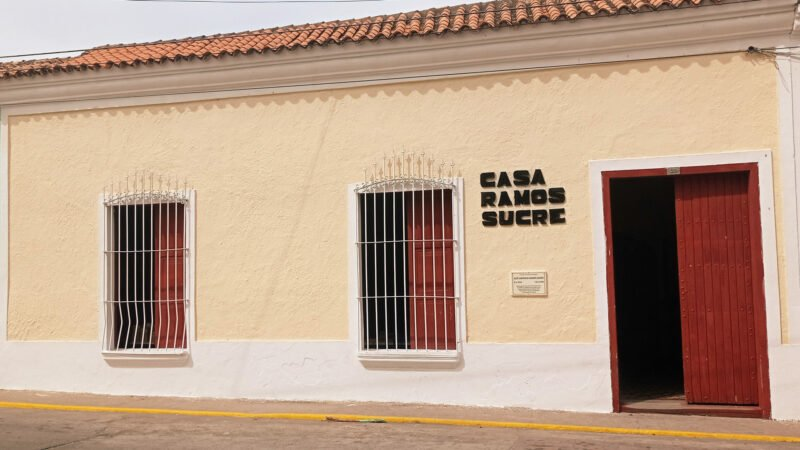
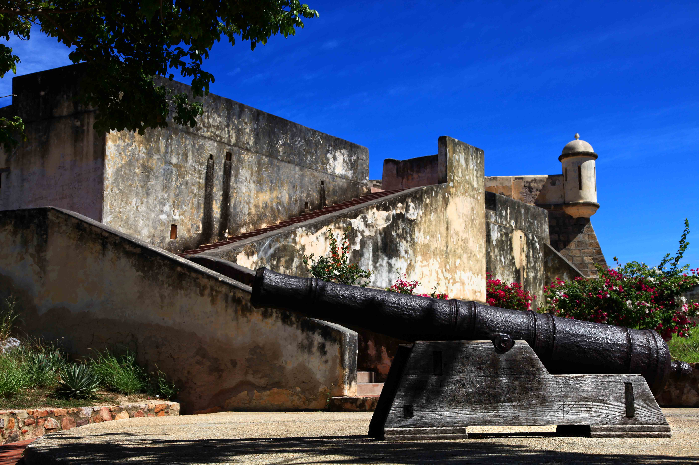
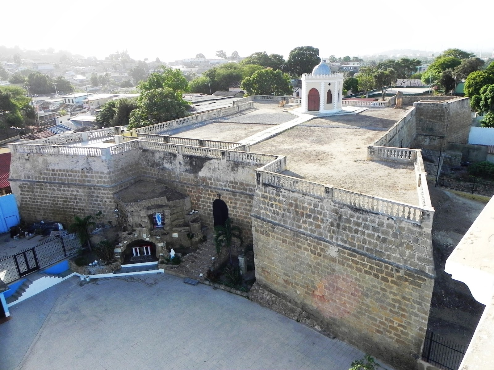
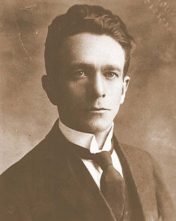

Historia
Cumaná fue fundada por misioneros franciscanos y colonizadores españoles en 1521, lo que la
convierte en una de las primeras poblaciones europeas establecidas en Sudamérica. Su nombre se
relaciona con los pueblos indígenas cumanagotos que habitaban esa costa antes de la llegada de los
europeos.
El casco histórico que conocemos hoy —incluyendo el área de San Francisco— fue el centro urbano
colonial donde se desarrollaron gran parte de la vida social, religiosa y administrativa desde sus
inicios.
¿Qué es exactamente el casco histórico?
El casco histórico de Cumaná es una zona urbana de aproximadamente 42 hectáreas que fue oficializada
como zona de valor histórico y cultural en 1977. Está delimitado por hitos urbanos como el río
Manzanares y varias calles importantes, y reúne edificios, plazas, monumentos y estructuras que
narran siglos de historia urbana, colonial y republicana.
Este espacio histórico no es solo arquitectura antigua: es un texto vivo de la historia de Venezuela — con casas coloniales, templos, plazas y fortificaciones que fueron parte de la vida diaria de los
cumaneses desde el siglo XVI hasta hoy.
Lugares De Interes
En esta seccion se presentan los lugares históricos más relevantes de nuestro territorio.
Casa de Ramos Sucre
La Casa de Ramos Sucre es la casa natal del destacado poeta venezolano José Antonio Ramos Sucre, ubicada en el casco histórico de Cumaná, frente a la Iglesia de Santa Inés, en la Calle Sucre n.º 29 de esa ciudad costera.

Iglesia de Santa Inés
La Iglesia de Santa Inés es un templo católico ubicado en el casco histórico de Cumaná, Venezuela. Construida en el siglo XVIII, es una de las iglesias más antiguas y emblemáticas de la ciudad, conocida por su arquitectura colonial y su importancia histórica y cultural en la región.

Castillo San Antonio de la Eminencia
El Castillo San Antonio de la Eminencia es una fortificación histórica ubicada en Cumaná, Venezuela. Construido en el siglo XVII, este castillo fue diseñado para proteger la ciudad de ataques piratas y corsarios. Situado en una colina estratégica, ofrece vistas panorámicas del mar Caribe y la ciudad de Cumaná.

Castillo Santa María De La Cabeza
El Castillo Santa María de la Cabeza es una fortificación histórica ubicada en Cumaná, Venezuela.Construido en el siglo XVII, este castillo fue diseñado para proteger la ciudad de ataques piratas y corsarios. Situado en una colina estratégica, ofrece vistas panorámicas del mar Caribe y la ciudad de Cumaná.

Proceres
Jose Antonio Ramos Sucre
José Antonio Ramos Sucre (Cumaná, 9 de junio de 1890 - Ginebra, 13 de junio de 1930) fue un poeta, diplomático y profesor venezolano. Es considerado uno de los escritores más importantes de la literatura venezolana del siglo XX y una figura destacada del modernismo y la vanguardia literaria en América Latina.
